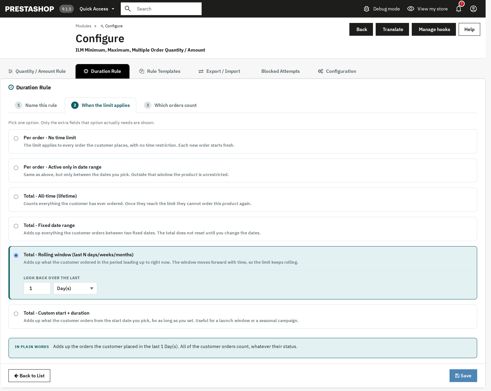

| Type | Meaning |
|---|---|
| Total · Rolling window | Adds up what the customer ordered in the last N day(s)/week(s)/month(s)/year(s), counted back from right now. The window keeps moving forward with time. |
Types that need extra input reveal a small field group in place, for example the rolling window's day/week/month/year count:

Only the fields the chosen type actually needs are shown — the panel below reads the choice back in plain words before you save.